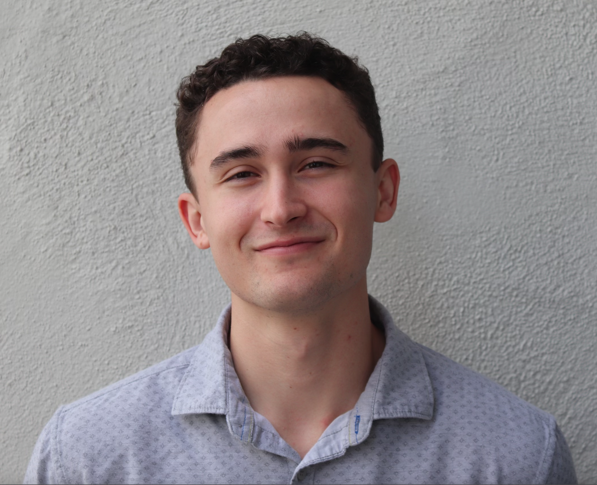

hello world!

I am third year software engineering major at the University of California Polytechnic State Universty. I am from Monterey California, where I have lived my whole life. In the context of programming I am most confortable in Java programming and frameworks such as Spring, but have I also know HTML, CSS, and Python. Outside the realm of programming and computer science I love to garden, excerice, and almost anything that has to do with the outdoors.